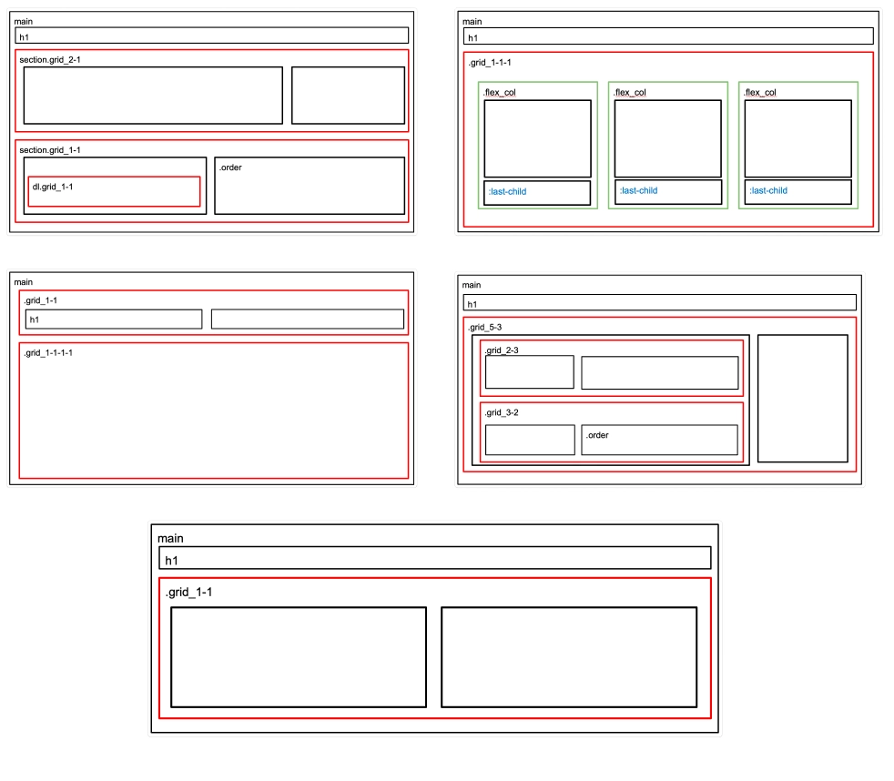
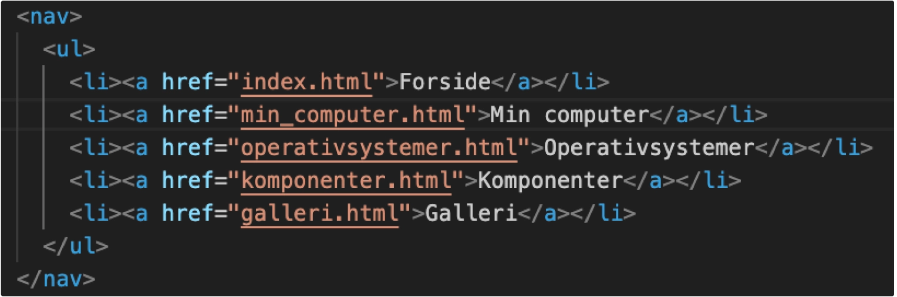

I Tema 2 arbejdede jeg med grundlæggende webudvikling. Fokus var på at lære at opbygge et website med HTML og CSS samt få forståelse for struktur, navigation og responsivt layout.

Mobil/website:
Min endelige løsning bestod af et responsivt website med fem HTML-sider om computere og operativsystemer. Websitet indeholdt blandt andet information om komponenter, operativsystemer, min egen computer samt et galleri. Sitet blev først udviklet som et mobilsite og derefter videreudviklet til desktop ud fra de udleverede wireframes og layoutdiagrammer.
Se projektProces:
Jeg startede med HTML, som blev brugt til at opbygge strukturen på websitet, herunder navigationen mellem de fem sider. CSS brugte jeg til styling og layout, hvor jeg blandt andet arbejdede med Grid, margin, padding og media queries. Kodeeksemplerne viser blandt andet navigationen mellem siderne samt brugen af responsive layouts.


Hvad har jeg lært?
Jeg lærte at opbygge et website fra bunden ved hjælp af HTML og CSS. Gennem temaet fik jeg erfaring med at strukturere indhold, opbygge navigation mellem flere sider og arbejde med layout på både mobil og desktop.
Jeg lærte også at anvende semantisk HTML, CSS Grid og media queries til at skabe et responsivt website samt vigtigheden af en tydelig struktur og adskillelsen mellem HTML-struktur og CSS-styling.